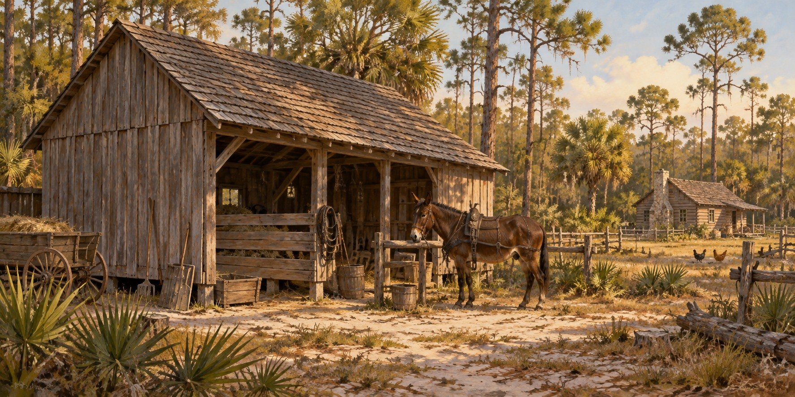

Frontier Barns
Farm Buildings That Sheltered Animals Tools and Harvests

A farm needed places for animals, tools, harness and harvested crops. Some buildings served several of those purposes; others were specialized. Florida’s farm outbuildings ranged from modest shelters to larger barns, shaped by available lumber, money and labor. A monumental timber-frame raising should not stand for every pioneer household.
What a Frontier Barn Was For
The barn sheltered mules and horses, the power source of a pioneer farm, from violent summer storms and winter cold snaps. It kept harness, tools and the wagon dry, and held hay and fodder in a loft above the animals. On cattle farms, pens attached to the barn held weaning calves and stock ready for market, and a covered breezeway gave shade for harness repair, sharpening and branding. Seed corn was sometimes stored there rather than in the crib, as the most secure dry space on the homestead.
How a Frontier Barn Was Built
Construction varied by farm and period. Logs, framed lumber and later additions could all appear within the same group of outbuildings. At Dudley Farm, surviving structures document a working farm that developed across generations. Its barn belongs to a larger complex that includes a corn crib, smokehouse and separate kitchen.
Florida’s Climate and the Barn
Heat, rain and moisture made ventilation, drainage and sound roofing practical concerns. Openings allowed airflow, while shelter kept equipment and animals out of direct weather. Keeping wood away from prolonged dampness helped its life, but no single roof pitch or fastening rule can describe the state’s historic barns.
The Barn Raising as Community Institution
Building or repairing a substantial structure could bring neighbors together. Work with heavy materials required coordination, and feeding the workers was part of the day’s labor. The cooperation mattered without needing an unsupported claim that twenty or thirty people always finished the frame before sunset.
Why Few Remain
Historic farm buildings need continuing maintenance and can disappear when land use changes. Dudley Farm preserves a group of agricultural structures that helps visitors see the relationships among house, work spaces and storage. Studying an actual farm is more reliable than assuming every surviving barn followed one imported model.
Quick Facts
| Purpose | Shelter animals, equipment, harness and harvested crops |
|---|---|
| Construction | Varied by locality, resources and period |
| Climate concerns | Ventilation, drainage and protection from rain |
| Documented example | Dudley Farm Historic State Park near Newberry |
| Related buildings | Corn crib, smokehouse and separate kitchen |
Did You Know?
A barn was part of a larger group of working farm buildings.
The same farm could include structures built in different generations.
Vocabulary
Bent: a transverse timber frame that forms a barn’s skeleton.
Pike pole: a long pole used to push a frame upright.
Mortise and tenon: a joint where a projecting piece fits a cut socket.
Discussion Questions
1. Why did a barn need a community when a cabin did not?
2. How did Florida’s climate change barn design?
Related Articles
FLH-0049 — Log Construction Methods
FLH-0050 — Building a Homestead
Sources
Ste. Claire, Dana. Cracker: The Cracker Culture in Florida History. Museum of Arts and Sciences, Daytona Beach, 1998.
Dudley Farm Historic State Park, Newberry, FL.
Heritage Village of Pinellas County, Largo, FL.
Manatee Village Historical Park, Bradenton, FL.
Florida Memory. State Library and Archives of Florida. floridamemory.com
Florida State Parks — History of Dudley Farm